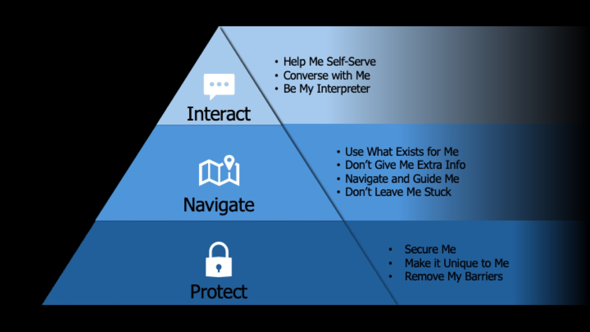

How do members use and perceive USAA’s virtual assistant, IVR, and search? I led mixed-methods research to find out — shaping a conversational strategy that is secure, seamless, and trustworthy.
ClientUSAA
Timeline12 Weeks
RoleLead UX Researcher
Team1 Support Researcher, 2 Product Managers, 1 Digital Director

The challenge
The team needed to understand how members use and perceive conversational channels — virtual assistant (VA), IVR, and search — in order to design secure, seamless, and trustworthy experiences.
The result
I led mixed-methods research uncovering channel roles, pain points, and expectations. Members wanted quick info from search, guided support from the VA, and efficient escalation via IVR — but faced friction with authentication, lack of continuity, and unclear menus.
Key takeaways
Channel roles are distinct
Members see each channel as serving a unique purpose: quick info, guided help, or efficient escalation to a person.
Abandonment happens when stuck
“Phone jail” loops or missing answers lead to frustration and drop-off; search is more resilient but abandoned when results feel incomplete.
Keep menus and results short
Keywords work better than full sentences, and members prefer 3–5 options max across menus and search results.
Self-serve first, escalate when needed
Members prefer self-service but expect seamless escalation to humans when tasks are complex, urgent, or when systems fail.
Context must carry across channels
Members want to switch between channels — chat to phone, phone to SMS — without repeating themselves or losing progress.
Balance innovation with comfort
Successful conversational experiences blend new technologies with members’ trust, ease, and expectations.
Themes
We can improve the conversational experience by leveraging the right level of technology to protect, navigate, and interact.
The three themes: Protect, Navigate, and Interact.
Protect
Keep my information safe without locking me out
Secure me
Members are highly aware of hacking threats and want strong protection.
They trust companies’ security steps but don’t need detailed explanations.
They prefer alternatives to personal security questions, which feel invasive.
Less trust in AI handling sensitive data vs. humans.
Make it unique to me
Security feels strongest when unique or personal (Face ID, PIN).
Passwords are seen as secure but disliked — too many, too complex.
Voice ID isn’t trusted: it feels unreliable, hackable, and unfamiliar.
Remove my barriers
Frustration when asked to authenticate for public info or re-authenticate mid-session.
Preference for continuity across channels — no need to re-verify with the same rep.
Split on 2FA: older members prefer extra steps, younger members prefer fewer.
Navigate
Help me find what I need without friction
Use what exists for me
Members expect USAA to know their products, history, and prior steps.
They want access to past VA transcripts for reference.
SMS is strongly desired: familiar, low-barrier, multitask-friendly, and convenient for switching channels.
Don’t leave me stuck
IVR often feels like a “black hole” — loops and wrong transfers.
Members expect clear ways to escalate when bots fail.
Backup login methods are needed if the preferred method fails.
No direct path to human support leaves members frustrated and undervalued.
Navigate and guide me
Direct links to tasks and info, avoiding clunky navigation.
Menu options should funnel logically from general to specific.
By the third IVR round, members expect resolution or a human.
FAQs, suggested keywords, and autofill improve self-service.
Don’t give me extra information
Too many results or options overwhelm and slow members down.
Avoid jargon and long descriptions in IVR and VA.
Members want clarity and brevity for faster decisions.
Interact
Give me useful, human-like, and capable support
Help me self-serve
Members want to resolve issues themselves when possible.
IVR and VA are seen as limited, but members are open to more self-service if it’s reliable.
Desired VA tasks: multi-step actions like forms, transactions, and personal info updates.
Desired IVR tasks: simple, quick tasks like status checks, balances, and payments.
Converse with me
Some members want efficient, robotic systems; others want a human-like tone.
The best balance: polite, brief conversational elements (“hello,” “please,” “thank you”) without unnecessary fluff.
Be my interpreter
Current systems only work if members use the “right” terms.
Members want flexible language recognition that maps their words to company terms.
They want to bypass menus with keywords when they already know what they need.
Opportunity spaces
Reduce authorization requirements
Limit re-authorization when switching channels with the same person, or within the same channel.
Open access to general, public information — especially in search — without authentication.
Maintain and access context
Let conversations continue after an app or website logout, ideally with priority re-queue.
Allow channel switches (VA to call, text, or email) that keep the conversation’s context.
Let members pause a chat and come back to it without losing context.
Give support access to recent activity and past VA transcripts.
Add the ability to start or switch to text messaging with a human.
Optimize systems with AI
Use AI to complete simpler tasks faster — without giving it full access to personal data.
Improve voice and written recognition, especially for top self-serve tasks.
Improve menu efficiencies
Show 5 search results; cap VA menus at 3 options and IVR at 5.
Provide a menu bypass and a hotline to a person for emergencies.
Add a back button and a direct way to reach a person when there’s no way out.
Keep FAQs, suggested topics, and autofill for search; narrowing options for IVR and VA.
Continue content optimization
Remove irrelevant information like company history, keep conversations succinct, and cut jargon.
Keep bot flows short, with a polite tone and no extra wording or strong personality.
The impact
The research insights shaped USAA’s conversational strategy, driving improvements in authentication, AI optimization, and channel integration — enabling more intuitive, trusted, and human-centered experiences.